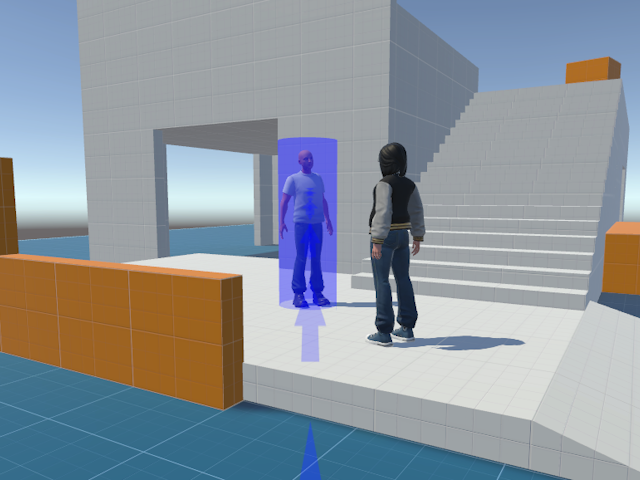
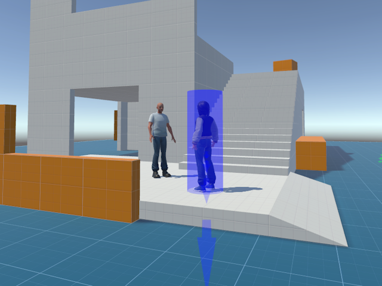
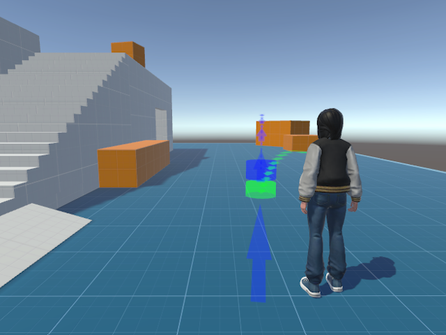

Social VR · Interact 2023
Together Porting
Multi-user locomotion in social virtual reality
This work encourages researchers and designers to explore new types of locomotion better aimed at social VR. Read the interactivity article in Interact 2023’s proceedings.
Abstract
We present a design prototype that demonstrates new locomotion techniques for social virtual reality experiences.
Specifically, we showcase three teleportation-based techniques which, together, support users as they join other
groups of people, and help them move together in virtual environments. The new interactions include a technique
to join a group with option for adjacency, the ability to reverse teleport
a user to your own group, and
finding a consensus on where to teleport together. We argue that our new locomotion techniques maintain the
simplicity of current teleportation-based techniques while supporting new interactions with people. We present
our design prototype so that we can explore how new teleportation-based techniques can be designed to better
support prosocial behaviour, but also highlight their potential to disrupt social experiences in social VR.
Social VR · Locomotion · Teleportation · Multi-user · Virtual reality
1. Joining a group with adjacency
When teleporting we often use a small reticle on the ground and use point and click to navigate. In our demo we allow target people to be selected. When the user moves they are teleported to a new position using an F-formation.

2. Reverse teleporting
Following the ability to move to a group, we might want to think about moving someone from a group to our position. This can again use an F-formation. We might use this when we need to coordinate movement with others quickly. However, thinking about consent is important. Designers should think about how you opt in or out of being reverse teleported.

3. Stacked reticles: a shared destination
Considering social teleporting, or what we call Together Porting, we need to think about moving with others at the same time. When teleporting together we allow an existing teleport reticle to be selected. From the perspective of this second user, we show where the first user is going but offset to where we will teleport to, ensuring that we can easily see a shared destination but avoiding ending up in the exact same space.

Original work by Gavin Wood and Patrick Dickinson. For more information, contact mail@baawolf.com.
Research last revised 18 September 2023 · View the project on GitHub